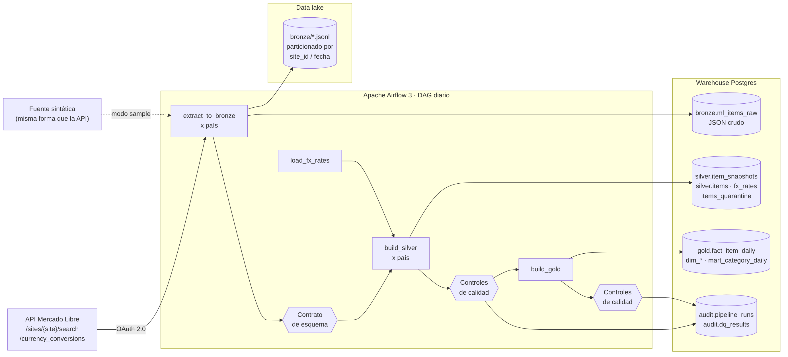
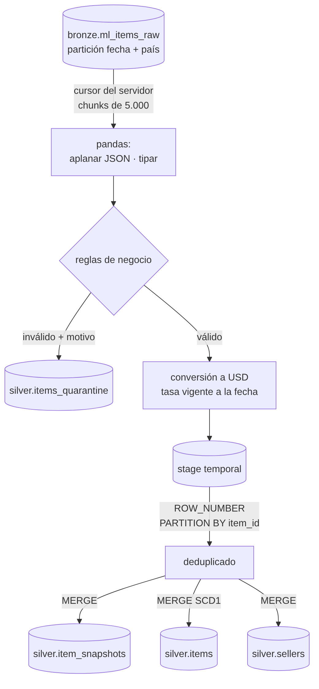
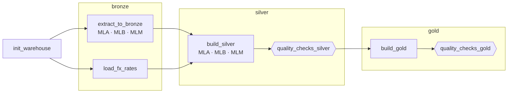
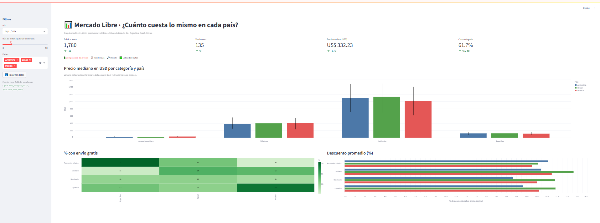
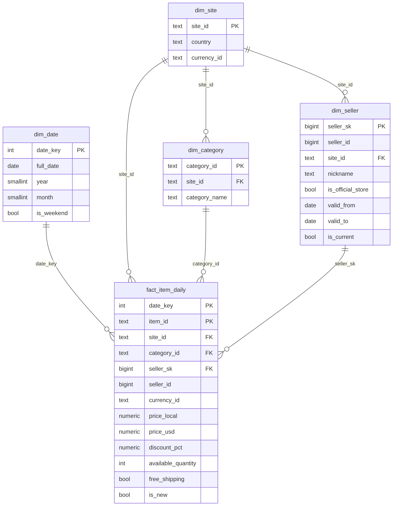

| Etapa | Qué se logró |
|---|---|
| Origen | Simulacro de entrevista para una vacante de Data Engineer como guía de los temas a demostrar. |
| Etapa 1 | Pipeline completo: extracción con modo sample/api, Medallion, controles de calidad, DAG de Airflow, tests y CI. |
| Etapa 2 | Repositorio publicado en GitHub y stack funcionando en Docker Desktop (Windows). Primera corrida en verde. |
| Etapa 3 | Dashboard en Streamlit con 4 pestañas sobre la capa Gold, como contenedor propio. |
| Mejora 1 | Dimensión de vendedores con historial (SCD tipo 2) y hechos con referencia point-in-time. |
El punto de partida fue un simulacro técnico de entrevista para una vacante de Data Engineer: 15 preguntas de opción múltiple, 8 preguntas abiertas y 3 ejercicios prácticos (SQL, Python y Airflow). En lugar de estudiar las respuestas de memoria, la decisión fue construir un proyecto real donde cada tema del simulacro tuviera una implementación concreta para mostrar.
Desde 2025, Mercado Libre exige un token OAuth 2.0 en todos sus endpoints, incluida la búsqueda pública. Para que el proyecto corra en cualquier máquina (y en una entrevista) sin credenciales, se diseñaron dos modos de extracción:
| Modo | Uso | Requiere |
|---|---|---|
sample (por defecto) | Demo, CI y entrevistas. Genera datos con la misma forma que la API, determinísticos por fecha y con suciedad realista a propósito. | Nada |
api | Datos reales desde la API de Mercado Libre. | App en developers.mercadolibre.com |
El resto del pipeline es idéntico en ambos modos: sólo cambia la función de extracción.

| Capa | Contenido | Patrón de carga (idempotente) |
|---|---|---|
| Bronze | JSON crudo tal cual llega, con duplicados y errores. Archivo JSONL en el data lake + tabla bronze.ml_items_raw. | Delete + insert por partición (fecha, país) |
| Silver | Datos tipados, deduplicados, con moneda original, tasa aplicada y precio en USD. Cuarentena para lo inválido. | ROW_NUMBER() + MERGE |
| Gold | Esquema estrella (fact_item_daily + 4 dimensiones) y data mart por país, categoría y día. | Delete + insert por fecha · SCD2 en vendedores |
| Herramienta | Rol | Motivo de la elección |
|---|---|---|
| Apache Airflow 3.1 | Orquestación | Estándar de la industria; versión actual con TaskFlow API y dynamic task mapping. |
| Docker Compose | Entorno | Todo el stack se levanta con un comando, igual en cualquier máquina. |
| PostgreSQL 16 | Warehouse | Gratis y local; soporta MERGE y funciones de ventana con SQL estándar portable a Snowflake, BigQuery o Databricks. |
| pandas | Transformación en Silver | Aplanado de JSON, reglas de negocio y conversión de moneda testeables sin base de datos. |
| Streamlit + Altair | Dashboard | El dashboard queda como código versionado en el repo. |
| pytest + GitHub Actions | Calidad del código | Tests unitarios, end-to-end contra Postgres e integridad del DAG en cada push. |
dags/ml_medallion_daily.py DAG: sólo orquestación
src/ml_pipeline/
extract/ cliente API (OAuth, reintentos) + fuente sintética
bronze.py · silver.py · gold.py
transform/normalize.py pandas puro: aplanar, reglas, USD
quality/ contratos de esquema + controles de calidad
__main__.py CLI: mismo pipeline sin Airflow
sql/ddl · sql/silver · sql/gold SQL explícito (MERGE, ventanas, estrella, SCD2)
dashboard/ Streamlit sobre Gold
contracts/ · seeds/ · tests/ · docs/
docker-compose.yml · Dockerfile · Makefile · .vscode/ · .github/workflows/extract/ml_client.py): usa un access token o lo renueva con refresh_token. Como los refresh tokens de Mercado Libre son de un solo uso, el nuevo se persiste para la próxima corrida. Reintenta con backoff exponencial ante 429 y 5xx, y respeta la paginación.extract/sample_source.py): determinística por fecha, para que re-ejecuciones y backfills sean reproducibles. Inyecta a propósito ~3% de duplicados, ~1% de precios nulos, precios en cero, publicaciones en USD dentro de Argentina y un campo nuevo (promotion_tag) desde el 25/10 para simular schema drift.volume_drop (llega ~20% del volumen) y schema_break (desaparece el campo price).Cada país escribe un archivo JSONL particionado estilo Hive (site_id=MLA/ingestion_date=2026-11-03/) y carga el mismo contenido en bronze.ml_items_raw como JSONB, con payload_hash, source_file y run_id para trazabilidad.

silver.items_quarantine con el motivo.currency_id y price originales, la tasa aplicada (usd_per_unit, la vigente a la fecha) y price_usd.CREATE TEMP TABLE stg_items ON COMMIT DROP AS
SELECT * FROM (
SELECT r.*, ROW_NUMBER() OVER (PARTITION BY r.item_id ORDER BY r.record_seq DESC) AS rn
FROM stg_items_raw r
) d WHERE rn = 1;
MERGE INTO silver.item_snapshots AS t
USING stg_items AS s
ON t.item_id = s.item_id AND t.snapshot_date = s.snapshot_date
WHEN MATCHED THEN UPDATE SET price = s.price, price_usd = s.price_usd, ...
WHEN NOT MATCHED THEN INSERT (...) VALUES (...);gold.fact_item_daily tiene grano publicación × día y claves hacia dim_date, dim_site, dim_category y dim_seller. gold.mart_category_daily agrega por país, categoría y día: media, mediana, percentiles 25/75, % con envío gratis y descuento promedio. Las agregaciones se calculan en SQL dentro del warehouse (ELT).
Cada control es una consulta SQL que devuelve un número comparado contra un umbral; los resultados se guardan en audit.dq_results. Si falla un control de severidad error, el DAG se detiene y Gold no se publica.
| Dimensión | Control |
|---|---|
| Contrato | Campos requeridos y tipos; campos nuevos generan aviso |
| Unicidad | Una fila por publicación y día |
| Completitud | Llegaron todos los países; todo precio tiene USD |
| Validez | Precio > 0; cuarentena ≤ 10% |
| Consistencia | Moneda = moneda local del sitio o USD |
| Reconciliación | Bronze = Silver + cuarentena; Gold = Silver en filas e importes |
| Integridad referencial | Todo hecho apunta a dimensiones existentes |
| Volumen | Filas del día vs. promedio de 7 días (caída > 50% falla) |
| Frescura | Tasa de cambio del mismo día |

ml_medallion_daily agrupado por capas.@daily, zona horaria de Argentina, catchup=False, max_active_runs=1.retries=0: un dato malo no se arregla reintentando. Un cambio de esquema lanza AirflowFailException.MLC a la configuración.src/ml_pipeline y se puede ejecutar y testear sin Airflow.GitHub Actions ejecuta lint (ruff), tests unitarios, un test end-to-end contra un Postgres real, la integridad del DAG con Airflow instalado y el build de las imágenes Docker. Antes de publicar se verificó:
| Prueba | Resultado |
|---|---|
| Backfill de 15 días | Todas las corridas en verde; ~1.850 registros crudos y ~1.770 limpios por día |
| Re-ejecutar el mismo día | Conteos y suma de importes idénticos antes y después (idempotencia) |
Escenario volume_drop | Detectado: ratio 0,27 contra el umbral de 0,5 → falla el control de volumen |
Escenario schema_break | Detectado: 100% de registros sin price → falla el contrato; el crudo queda en Bronze |
Esta etapa mostró problemas reales de un primer despliegue. Se documentan porque explicar cómo se diagnosticó y resolvió cada uno es tan valioso en una entrevista como el código.
| Síntoma | Causa | Solución |
|---|---|---|
repository ... not found | git push no crea repositorios. | Crear el repositorio vacío en github.com y volver a hacer el push. |
! [rejected] main -> main (fetch first) | El repositorio remoto tenía un commit inicial creado desde la web. | Al ser un repo nuevo sin trabajo propio, se reemplazó con git push --force. |
| Síntoma | Diagnóstico | Solución |
|---|---|---|
localhost:8080 rechazaba la conexión | docker compose ps -a: el contenedor warehouse quedó en Created y todo Airflow esperaba que estuviera sano. | El puerto 5433 estaba ocupado en Windows. Se hizo configurable (WAREHOUSE_PORT) y se usó 15432. |
| "Triggerer" en rojo en la UI | Ese componente sólo se usa para tareas diferidas, que el proyecto no tiene. | Ninguna: es esperado. Se omitió para ahorrar memoria. |
Con eso, el DAG corrió completo en verde en la primera ejecución.
La consulta de resumen de una corrida, desde la tabla de auditoría:
SELECT step, site_id, rows_in, rows_out, status, finished_at - started_at AS duracion
FROM audit.pipeline_runs
WHERE run_date = (SELECT max(run_date) FROM audit.pipeline_runs)
ORDER BY id;Además: los archivos crudos se ven en data/lake/ desde VS Code, cada tarea muestra en la pestaña XCom de Airflow las métricas que devolvió, y sql/analysis/consultas_demo.sql reúne las consultas de revisión (duplicados en Bronze, motivos de cuarentena, controles de calidad y linaje de punta a punta).
Con el pipeline funcionando faltaba la cara visible: un dashboard que respondiera la pregunta de negocio. Se eligió Streamlit (en lugar de una herramienta de BI configurada a mano) porque el dashboard queda como código en el repositorio, se levanta con el mismo docker compose y se puede revisar en un pull request.
| Pestaña | Qué muestra |
|---|---|
| Comparación de precios | Mediana en USD por categoría y país con rango P25–P75; % con envío gratis; descuento promedio. |
| Tendencias | Evolución diaria del precio mediano y del volumen de publicaciones. |
| Detalle | Mayores bajas de precio vs. el día anterior, vendedores principales, historial SCD2 y descarga en CSV. |
| Calidad de datos | Resultado de cada control, Bronze vs. Silver por día, cuarentena por motivo. |

DASHBOARD_PORT) y se usó 8502. Los dos proyectos conviven sin conflicto.Hasta ahora, si un vendedor cambiaba de nombre o pasaba a ser tienda oficial, la dimensión se sobrescribía (SCD tipo 1). Un reporte de la semana pasada mostraba el nombre de hoy y se perdía la historia: no se podía responder, por ejemplo, "¿cuánto vendían los vendedores antes de ser tienda oficial?".
| SCD tipo 1 | SCD tipo 2 | |
|---|---|---|
| Ante un cambio | Sobrescribe el valor | Cierra la versión vigente y abre una nueva |
| Historia | Se pierde | Se conserva con rango de vigencia |
| Clave en los hechos | Clave natural | Clave subrogada de la versión vigente ese día |
| En este proyecto | silver.sellers | gold.dim_seller |
silver.seller_daily (vendedor × día con nombre y condición de tienda oficial).gold.dim_seller pasa a tener una fila por versión, con seller_sk (clave subrogada), valid_from, valid_to, is_current y un row_hash de los atributos para detectar cambios.fact_item_daily.seller_sk es la versión vigente el día del hecho (point-in-time).
-- Atributos del día con un hash para comparar
CREATE TEMP TABLE stg_seller ON COMMIT DROP AS
SELECT seller_id, site_id, nickname, is_official_store,
md5(concat_ws('|', nickname, is_official_store::text)) AS row_hash
FROM silver.seller_daily WHERE snapshot_date = :dia;
-- 1) Cambió algo: se cierra la versión vigente
UPDATE gold.dim_seller t SET valid_to = :dia, is_current = FALSE
FROM stg_seller s
WHERE t.seller_id = s.seller_id AND t.is_current
AND t.valid_from < :dia AND t.row_hash <> s.row_hash;
-- 2) Vendedores nuevos o recién cerrados: se abre una versión vigente
INSERT INTO gold.dim_seller (seller_id, site_id, nickname, is_official_store, row_hash, valid_from)
SELECT s.seller_id, s.site_id, s.nickname, s.is_official_store, s.row_hash, :dia
FROM stg_seller s
WHERE NOT EXISTS (SELECT 1 FROM gold.dim_seller t
WHERE t.seller_id = s.seller_id AND t.is_current);Y en la carga de hechos, la búsqueda de la versión vigente:
CROSS JOIN LATERAL (
SELECT d.seller_sk FROM gold.dim_seller d
WHERE d.seller_id = s.seller_id
ORDER BY (d.valid_from <= s.snapshot_date AND s.snapshot_date < d.valid_to) DESC, d.valid_from
LIMIT 1
) v| Caso | Comportamiento |
|---|---|
| Re-ejecutar el mismo día con datos distintos | Se corrige la versión que empezó ese día; no se crea una versión de duración cero. |
| Re-ejecutar un día viejo | La historia no cambia; los hechos de ese día apuntan a la versión vigente entonces. |
| Dos versiones vigentes por error | Lo impide un índice único parcial: UNIQUE (seller_id) WHERE is_current. |
| Base de datos de la versión anterior | Una migración (000_upgrade_legacy.sql) detecta el esquema viejo, elimina las tablas de Gold afectadas y deja que se recreen; Gold se reconstruye desde Silver. |
Para que haya cambios que versionar, la fuente sintética hace que 1 de cada 9 vendedores pase a ser tienda oficial el 28/10 y 1 de cada 11 cambie su nombre el 30/10. Después de un backfill del 21/10 al 04/11:
| seller_id | seller_sk | nickname | oficial | valid_from | valid_to | vigente |
|---|---|---|---|---|---|---|
| 107919 | 5 | VENDEDOR_MLA_001 | no | 2026-10-21 | 2026-10-28 | no |
| 107919 | 136 | VENDEDOR_MLA_001 | sí | 2026-10-28 | 9999-12-31 | sí |
| 110875 | 7 | VENDEDOR_MLA_014 | no | 2026-10-21 | 2026-10-30 | no |
| 110875 | 151 | TIENDA_MLA_014 | no | 2026-10-30 | 9999-12-31 | sí |
135 vendedores generaron 162 versiones. Los 7 controles de calidad de Gold pasaron, incluidos los tres nuevos:
Se agregaron tests end-to-end que verifican que un vendedor renombrado el 30/10 aparece con el nombre viejo en los hechos del 29/10 y con el nuevo en los del 31/10, y que re-ejecutar un día viejo no altera la historia. En el dashboard, la pestaña Detalle muestra el historial de versiones.
Las mejoras se implementan de a una. Cada una suma un capítulo a esta bitácora.
| # | Mejora | Qué demuestra | Estado |
|---|---|---|---|
| 1 | Dimensión vendedor con SCD tipo 2 | Modelado dimensional con historia | Hecha |
| 2 | Silver/Gold en Databricks Free Edition con PySpark y Unity Catalog | Spark, Delta Lake, gobierno de datos | Pendiente |
| 3 | Gold con dbt | Tests declarativos, documentación y linaje automáticos | Pendiente |
| 4 | Conexión a la API real de Mercado Libre | OAuth, límites de uso, datos impredecibles | Pendiente |
| 5 | Bronze en MinIO (S3 local) y formato Parquet | Arquitectura lakehouse | Pendiente |
| 6 | Particionado por fecha + análisis con EXPLAIN | Optimización medida antes/después | Pendiente |
| 7 | Alertas a Slack o email | Operación y monitoreo | Pendiente |
| 8 | Linaje con OpenLineage + Marquez | Linaje visual automático | Pendiente |
| 9 | Modelo de predicción de bajas de precio | Datos para IA, separación temporal, sin data leakage | Pendiente |
| 10 | Deploy en la nube con Terraform | Infraestructura como código | Pendiente |
Para Windows / PowerShell, desde la carpeta del proyecto. Con Linux o macOS también se puede usar make.
| Acción | Comando |
|---|---|
| Levantar todo | docker compose up -d --build |
| Ver estado | docker compose ps -a |
| Logs del scheduler | docker compose logs -f airflow-scheduler |
| Activar el DAG | docker compose exec airflow-scheduler airflow dags unpause ml_medallion_daily |
| Backfill | docker compose exec airflow-scheduler airflow backfill create --dag-id ml_medallion_daily --from-date 2026-10-21 --to-date 2026-11-04 |
| Simular caída de volumen | docker compose exec -e ML_SAMPLE_SCENARIO=volume_drop airflow-scheduler python -m ml_pipeline run --date 2026-11-05 |
| Consola SQL | docker compose exec warehouse psql -U warehouse -d warehouse |
| Reiniciar el dashboard | docker compose restart dashboard |
| Apagar (conserva datos) | docker compose down |
| Apagar y borrar todo | docker compose down -v |
| Servicio | Dirección | Variable para cambiar el puerto |
|---|---|---|
| Airflow | http://localhost:8080 | — |
| Dashboard | http://localhost:8502 (por defecto 8501) | DASHBOARD_PORT |
| Warehouse | localhost:15432 (por defecto 5433) | WAREHOUSE_PORT |
| Tema del simulacro | Evidencia en el proyecto |
|---|---|
| ETL vs. ELT | Silver transforma en pandas antes de cargar (ETL); Gold carga y transforma en SQL (ELT) |
| Último registro por entidad | ROW_NUMBER() OVER (PARTITION BY ...) en sql/silver/merge_items.sql; vista gold.vw_latest_item_price |
| Archivos grandes con poca memoria | Lectura por chunks con cursor del servidor (db.iter_chunks) |
| Tareas re-ejecutables | MERGE, claves únicas y delete + insert por partición; test de idempotencia |
| Validación de unicidad | Control silver_unique_item_per_day |
| Mapeo source-to-target | docs/source_to_target.md |
| Multimoneda | Moneda original + tasa fechada + USD en silver.item_snapshots |
| Tabla de hechos | gold.fact_item_daily, grano publicación × día |
| Historia en dimensiones | SCD tipo 2 en gold.dim_seller |
| Data lineage | _run_id, source_file, payload_hash; consulta de linaje Gold → archivo crudo |
| Pipeline en verde con 80% menos filas | Control de volumen + escenario volume_drop + docs/runbook.md |
| Cambio de esquema en el origen | contracts/ml_search_item.json + escenario schema_break |
| Airflow: DAG diario con reintentos | dags/ml_medallion_daily.py (2 reintentos, 5 minutos) |
| Databricks y Unity Catalog | docs/databricks.md (se implementa en la Mejora 2) |
| Controles de calidad | src/ml_pipeline/quality/checks.py, tabla audit.dq_results |